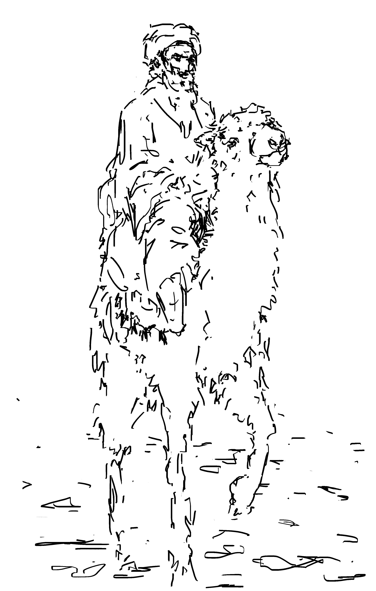

Silk Road merchant
[0] Thum, Rian Richard. The Sacred Routes of Uyghur History. Harvard University Press, 2014.
[1] Hasmath, Reza. "MANAGING CHINA’S MUSLIM MINORITIES: MIGRATION, LABOR AND THE RISE OF ETHNORELIGIOUS CONSCIOUSNESS AMONG UYGHURS IN URBAN XINJIANG." Religion and the State: A Comparative Sociology, edited by Jack Barbalet et al., Anthem Press, LONDON; NEW YORK; DELHI, 2011, pp. 121–138. JSTOR, www.jstor.org/stable/j.ctt1wn0r14.11.
[2] Shichor, Yitzhak. Ethno-Diplomacy: the Uyghur Hitch in Sino-Turkish Relations. East-West Center, 2009.